1.0 第三类买卖点定理
一个次级别走势类型向上离开缠中说禅走势中枢然后以一个次级别走势类型回试其低点不跌破ZG则构成第三类买点；一个次级别走势类型向下离开缠中说禅走势中枢然后以一个次级别走势类型回抽其高点不升破ZD则构成第三类卖点。
1.1 三买形态特点
- 所谓某走势的三买，指的是其走势为一笔，其次级别为的这一笔就是一个线段，而这个三买是在次级别中a、b、c三笔中，a已经冲出刺激别的笔中枢，b回撤不进入此笔中枢，c又继续向上。而a、b、c组合为一个新的线段，这个线段在本级别就是一笔。
- 本级别macd黄白线不回零轴
- 次级别macd黄白线回零轴（出笔中枢后，笔回撤时），也有微微破零轴之后黄白线在零轴附近走平后再拉升，不出现破零轴之后的明显波动。
- 在次次级别上可以看到 MACD 破 0 轴 ， 后出现背驰 ， 这里可以找到最低点 。
1.2 三买的操作
1.1 形态总结
- 首先明确，三买一定是次级别回撤，在次次级别的第一类买点，而不是其他的级别；
- 操作的过程中会出现几种情况：
- 三买次低点成“一买”的情况；
- 很低的级别突破中枢，回撤的情况；
- 正常的情况；
1.2 操作级别
- 三根K线的意义
-
确定次级别关键是看回撤的级别，在
次级别回撤一笔结束，次次级别的一买才是三买点。如果不是次级别回撤一笔，就不是三买。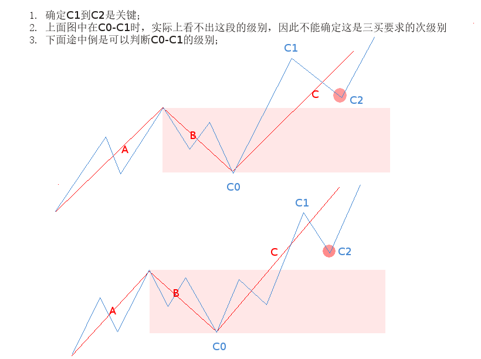
-
三买实质上做一个线段的后一部分利润。
2.0 各种三买形态举例
2.1 周线三买
在周线上是一笔中的几根k线重叠部分的低点，在日线走势图上是日线笔中枢出中枢后，回撤一笔不如这个比中枢的结束点。
-
《第23课 市场与人生》
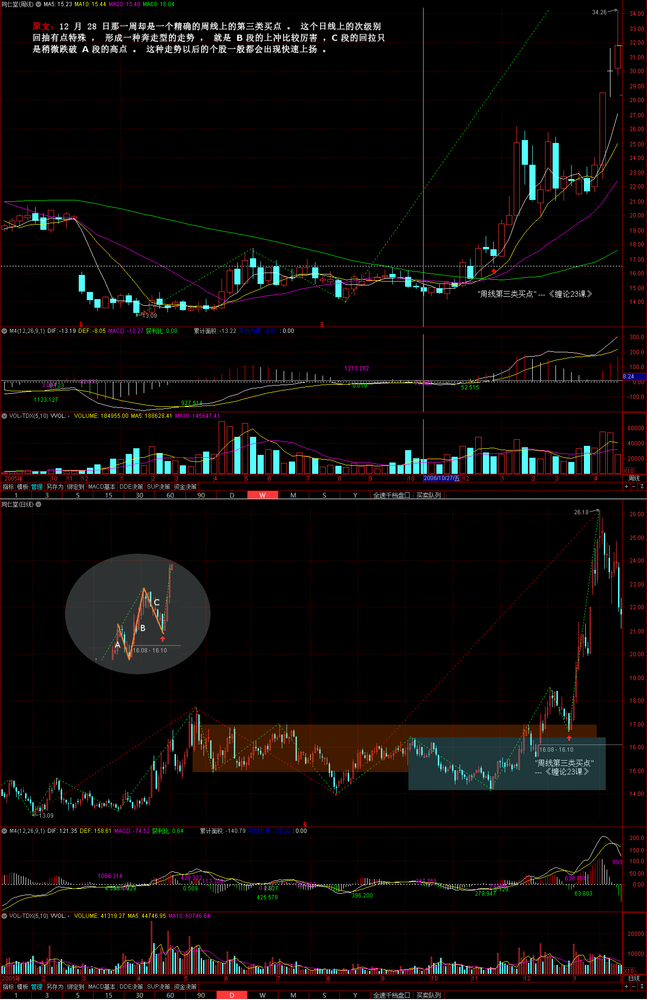
-
上海机场(600009) 2018-09-17
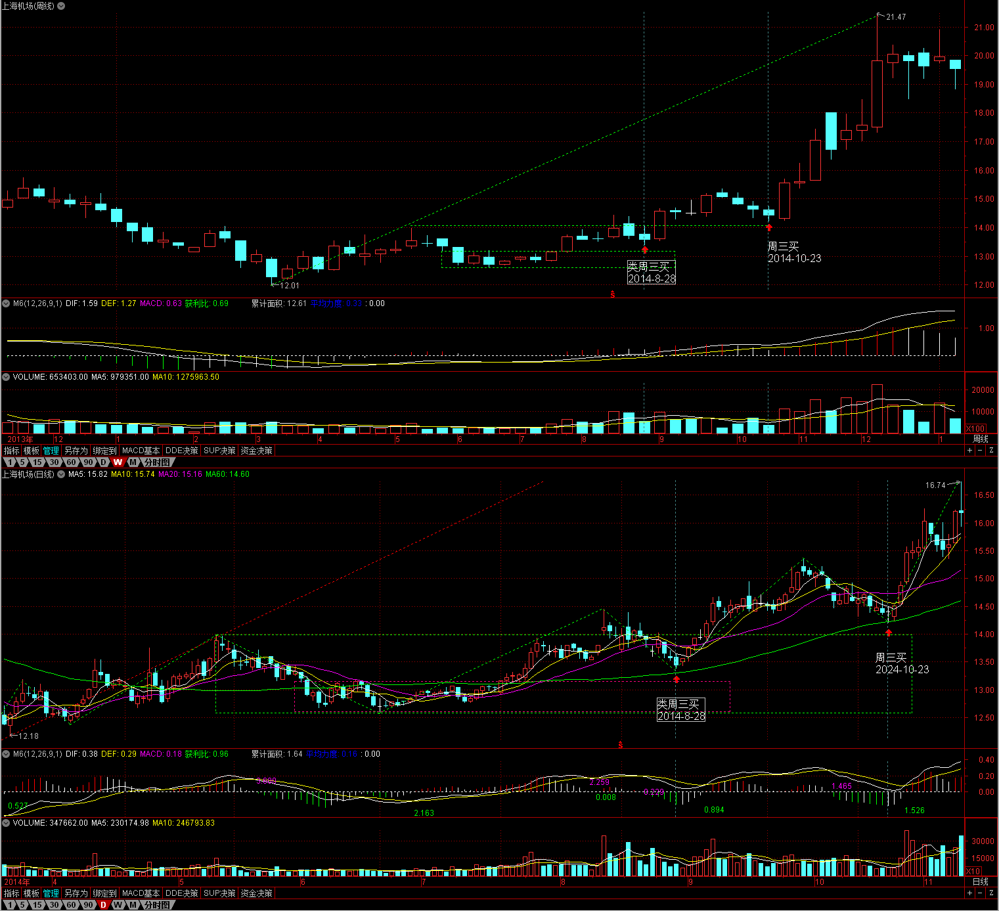
-
汤臣倍健(300146) 2018-07-17
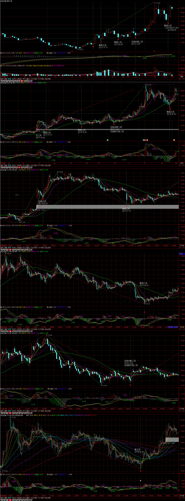
-
攀钢钒钛(000629) 2018-09-11
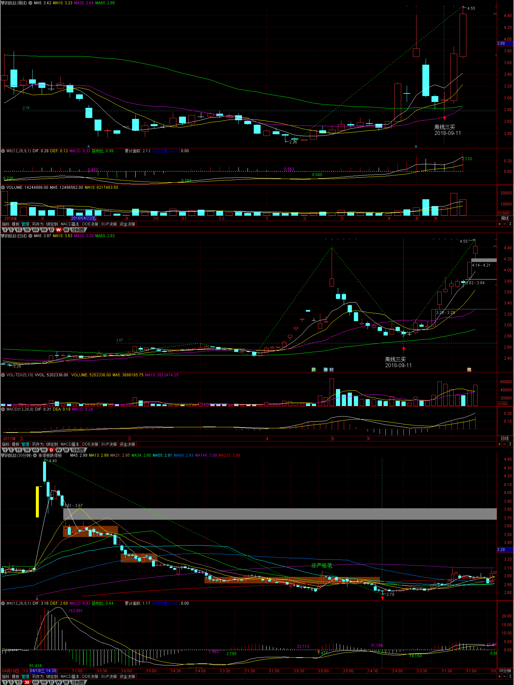
-
合兴包装(002228) 2018-06-26 2018-08-01
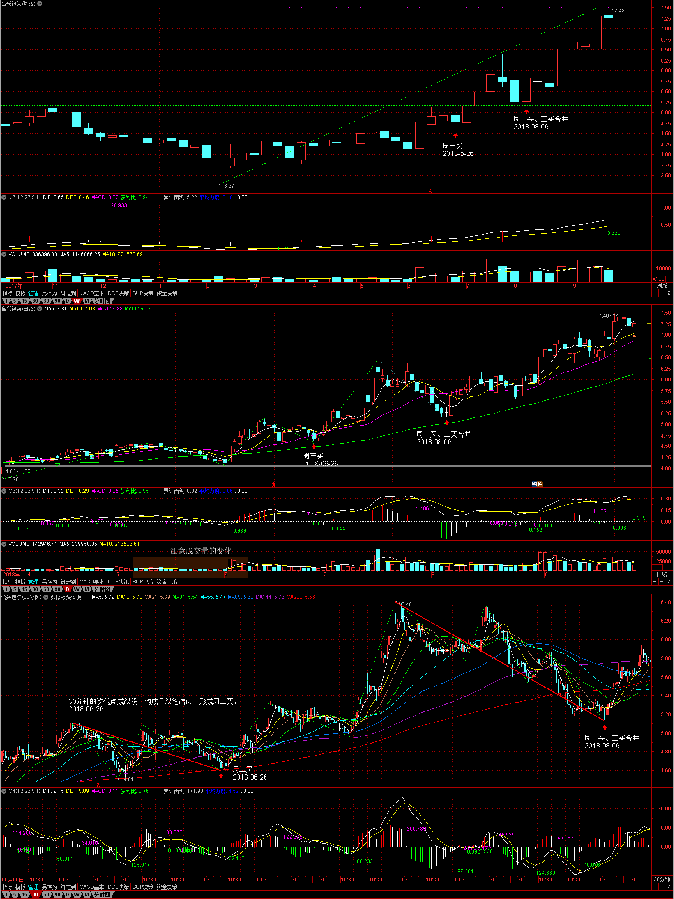
-
中国石化(600028) 2017-12-30
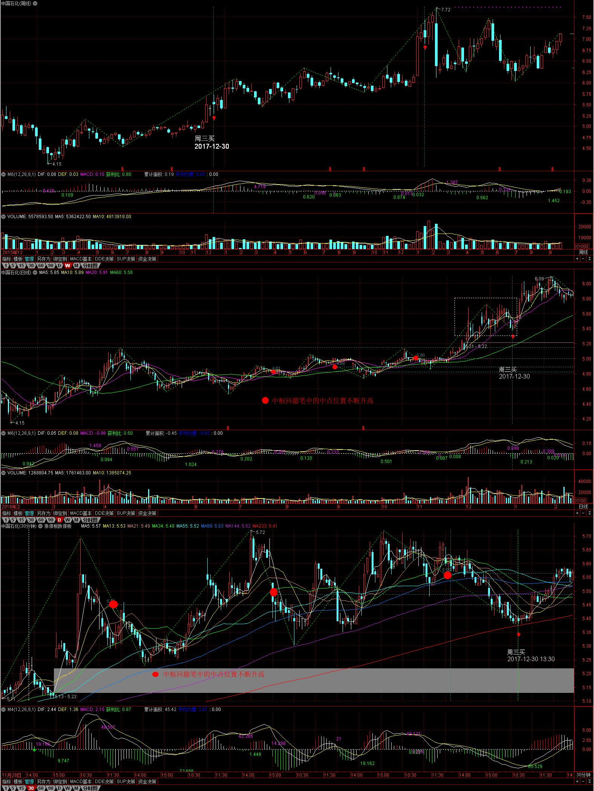
2.2 周三买转周二卖
-
广汇能源(600256) 2018-01-17
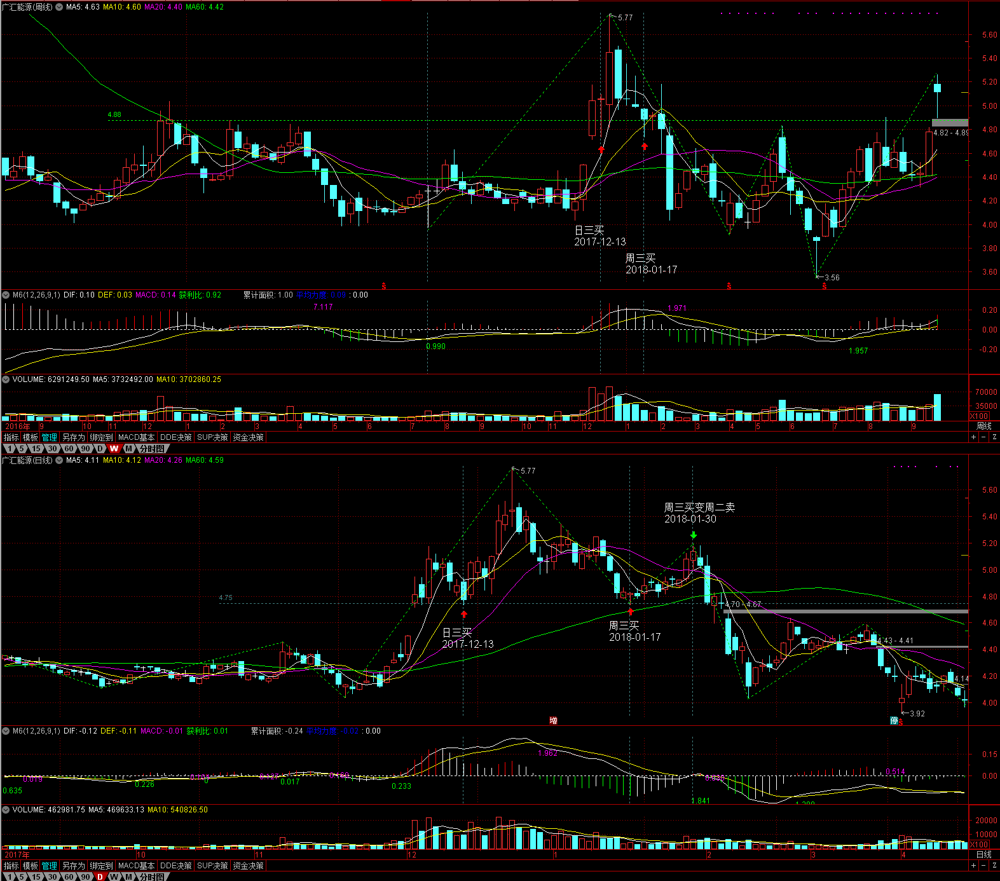
2.3 日线三买
在日线上是一笔中的几根k先重叠部分的地点，在30分钟走势图上是30分钟笔中枢出中枢后，回撤一笔不入这个比中枢的结束点。
-
汤臣倍健(300146) 2018-07-17
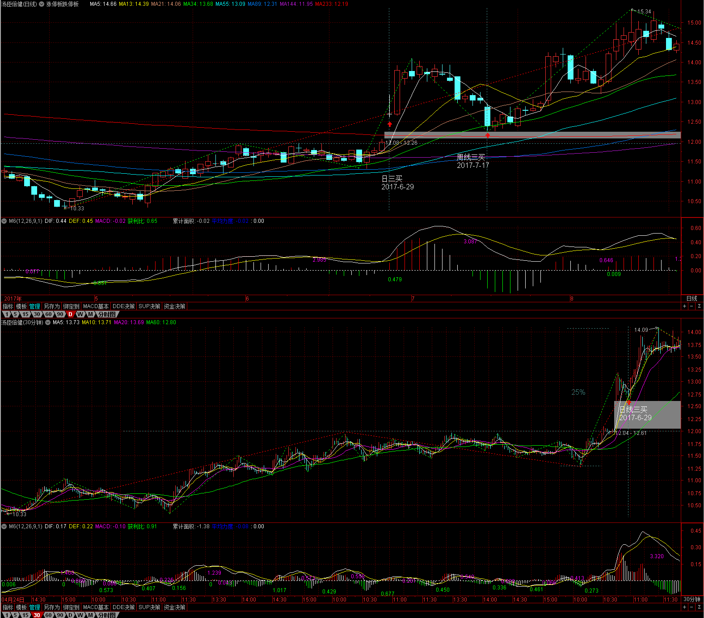
-
中国石油(601857) 2018-08-31
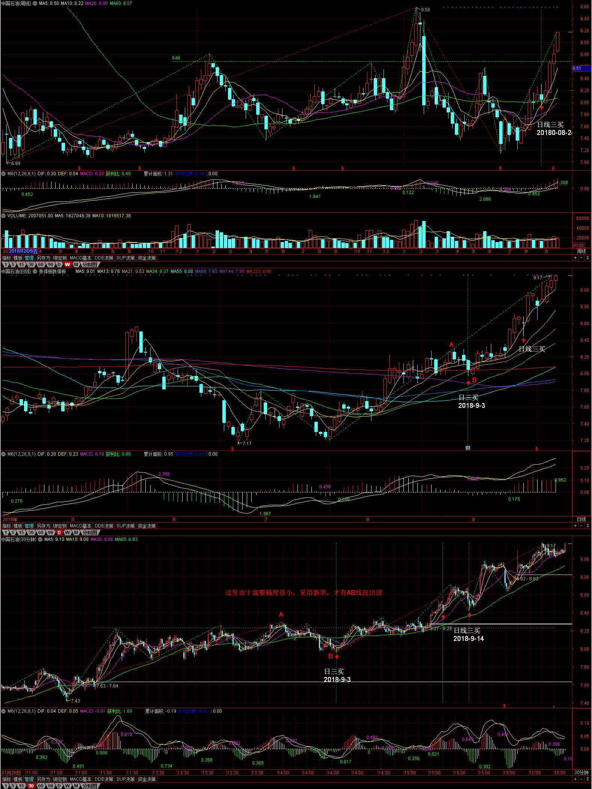
2.4 周三买、日三买合并
-
岷江水电(600131) 2018-08-09
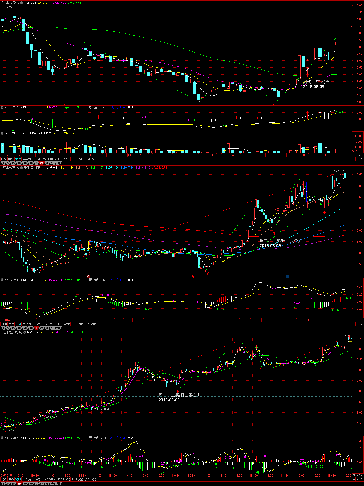